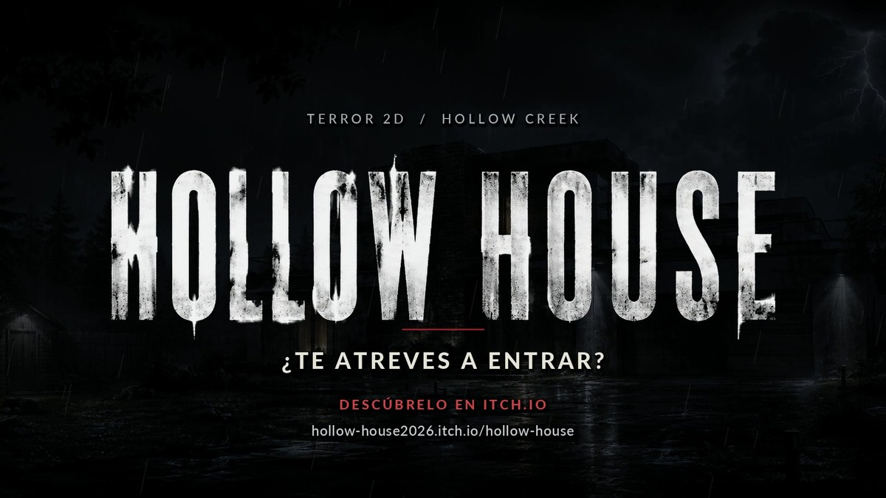

EL JUEGO YA ESTÁ PUBLICADO
Hollow House.
Disponible en itch.io: Windows, Linux y web.
La descarga y sus actualizaciones están en la página oficial de itch.io. No necesitas el editor de Godot para jugar a la versión exportada.
DESCARGA OFICIAL
Una noche en
la propiedad Hollow.
Usa la ficha oficial para obtener la versión publicada. No enlazamos ejecutables de terceros ni incluimos instaladores en esta página.
¿No abre o encontraste un error? Escribe al desarrollador.

DATOS DEL JUEGO
Antes de descargar.
- Plataforma
- Windows · Linux · Web
- Idiomas
- Español / English / Português
- Jugadores
- Individual o multijugador
- Entrada
- Teclado, mouse y mandos
- El proyecto
- Hollow House
- Disponibilidad
- Publicado
Descargas para Windows y Linux; versión web en itch.io.
Textos y diálogos del juego.
Partida individual o modo multijugador.
Movimiento, interacción y orientación de la linterna. La actualización 0.13.40 anuncia soporte para mandos Xbox y PlayStation.
Terror independiente.
La versión descargable está en itch.io.
¿Puedo jugar desde el celular o el navegador?
La ficha oficial de itch.io ofrece una versión web y descargas para Windows y Linux. Esto no confirma compatibilidad con celulares: no se anuncia aquí soporte para Android o iPhone.
¿Tengo que descargar Godot?
No para las versiones publicadas en itch.io. Descarga el archivo de juego que indique itch.io y conserva juntos los archivos de la distribución. El proyecto de desarrollo es una cosa distinta.
¿Qué versión debo usar para jugar con amigos?
Todos deben tener exactamente la misma versión. Consulta la descarga disponible en itch.io y la guía del modo multijugador.
¿Cuáles son los requisitos mínimos?
No se publican especificaciones mínimas de CPU, memoria o tarjeta gráfica sin una prueba que las respalde. Ante problemas, envía tu sistema operativo o navegador, su versión y una descripción a hollowhouse54@gmail.com.
¿Qué contenido de terror incluye?
El juego contiene persecuciones, sobresaltos, violencia ficticia y referencias a asesinatos y desapariciones. El tráiler no muestra el desenlace de la historia.